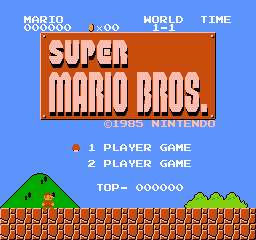

Overworld / Main Theme
Starman Theme
Flagpole Fanfare
Underworld Theme
Underwater Theme
Castle Theme
Rescue Fanfare
Ending Theme
Coin Sound
Item Block Sound
Power-Up Sound
Damage / Warp Sound
Vine Sound
1-Up Mushroom Sound
Pause Sound
Time Warning Sound
Death Sound
Game Over Sound
About
FAQ
Website will retire after January 2021. Please enjoy until then.
1-Up Mushroom Sound
Sheet Music
MIDI File
Video Demo